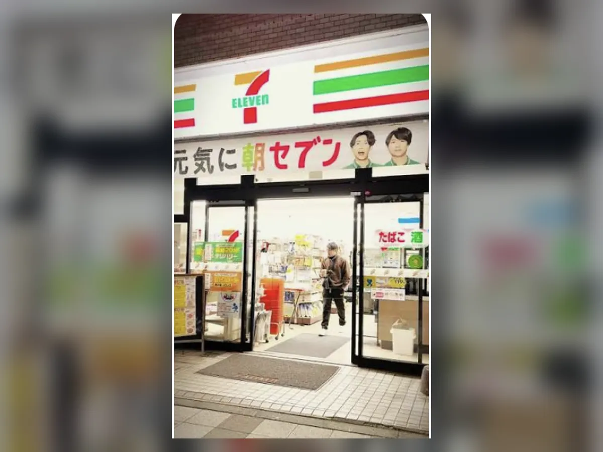
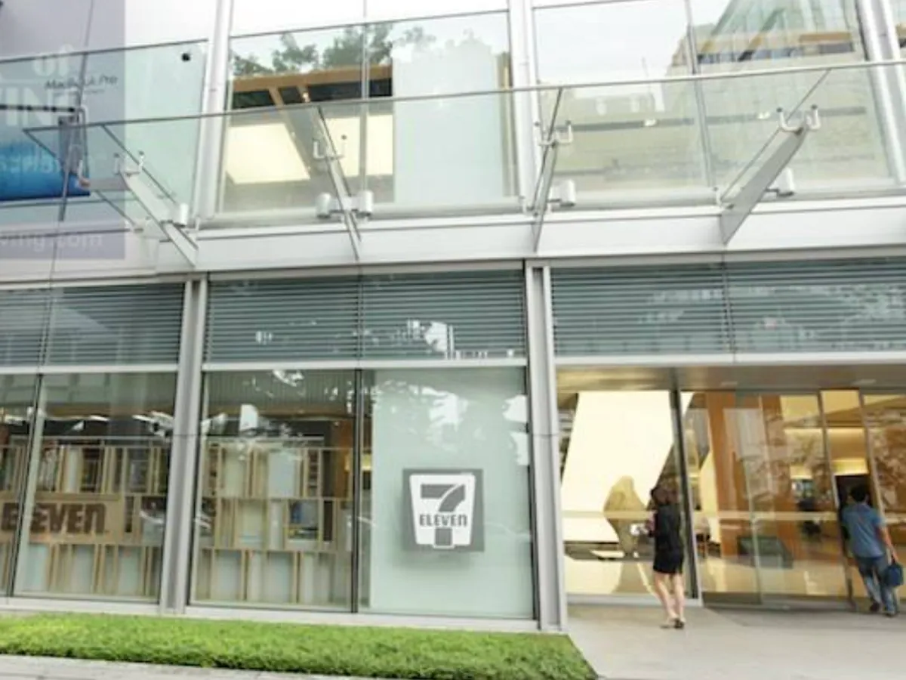
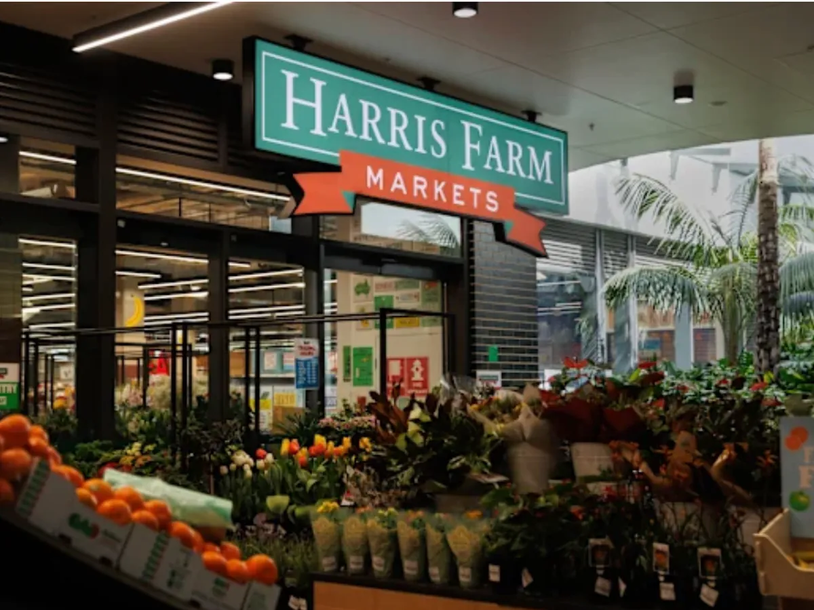
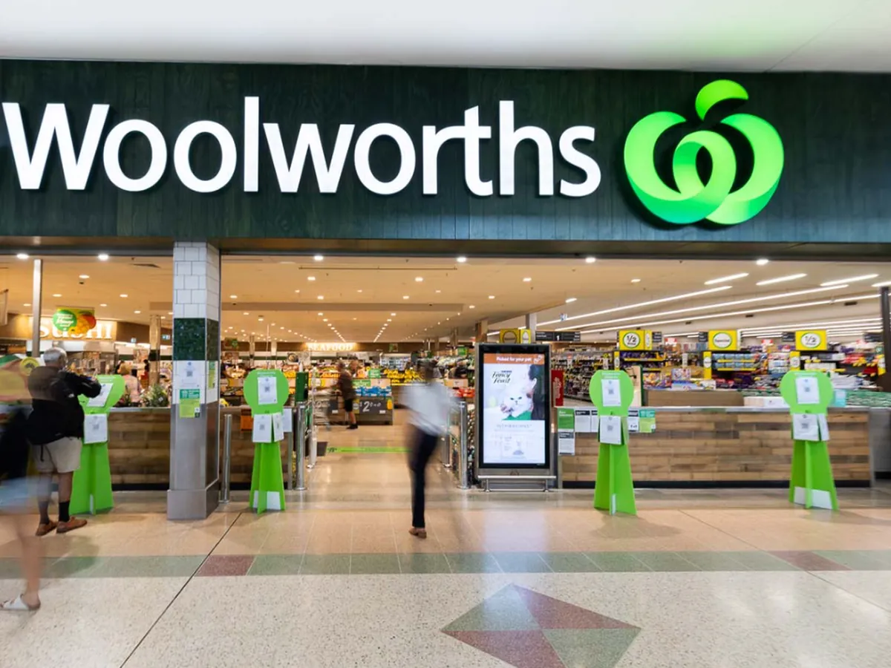
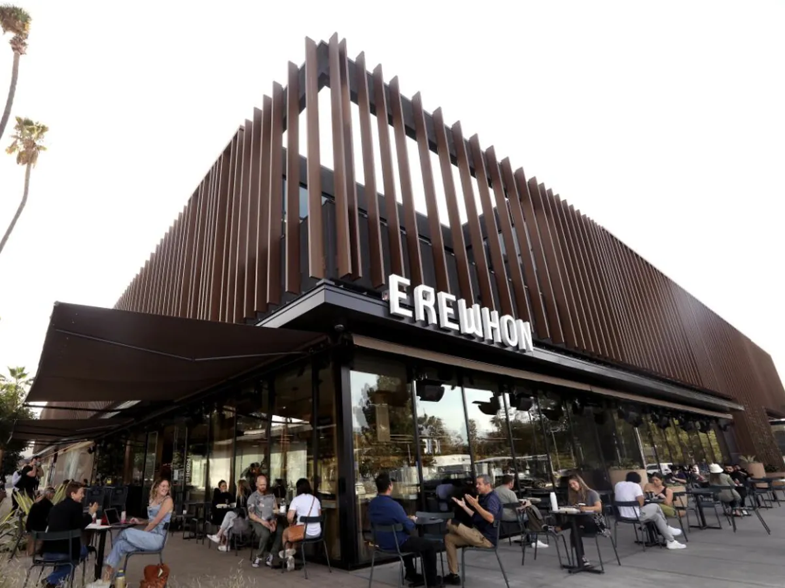
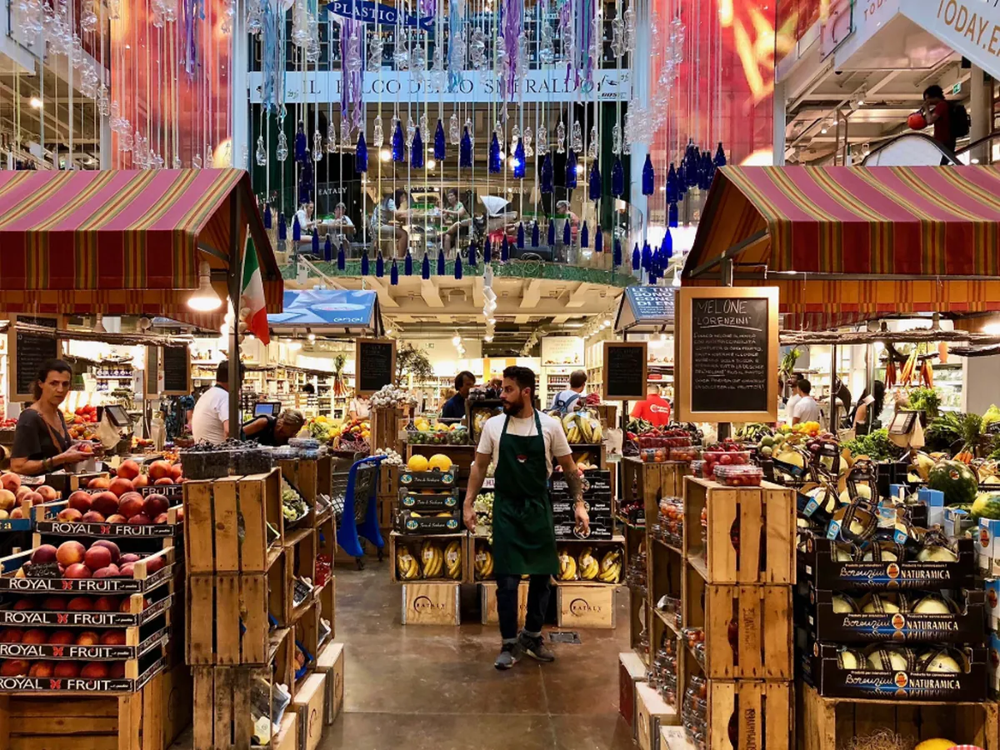
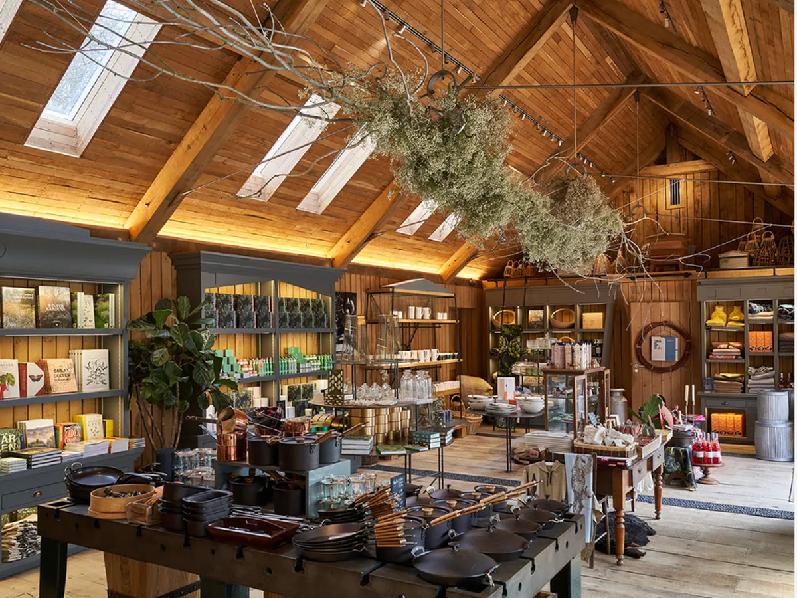
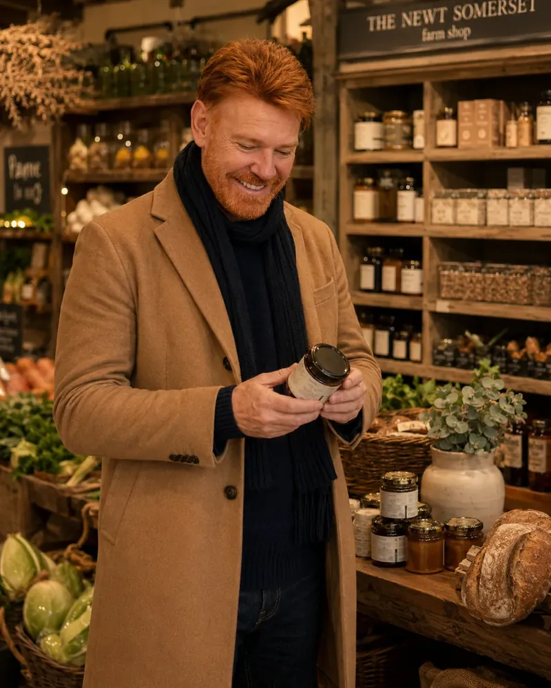

Tokyo · Japan
Tokyo 7-Eleven
Onigiri, bento, seasonal sweets and meticulous packaging make the konbini feel less like a fallback and more like a finely tuned part of everyday life.
Skip the souvenir shop for a moment. From Tokyo konbini to Somerset farm shops, the everyday grocery run can reveal how a place eats, saves, celebrates and moves.
Aisles are full of local evidence: regional brands, seasonal flavours, price points, pack sizes and the ready meals people actually buy on a working day.
This is not about turning every grocery run into a landmark. It is about slowing down long enough to notice what a city treats as practical, aspirational, healthy, indulgent or simply normal.
In Japan and Thailand, the convenience store works as pantry, café, service counter and late-night safety net — a compact portrait of the city’s pace.

Onigiri, bento, seasonal sweets and meticulous packaging make the konbini feel less like a fallback and more like a finely tuned part of everyday life.

Thai flavours, chilled drinks, quick meals and a surprising range of services show how the same global sign can speak with a distinctly local accent.
Mainstream chains and produce-led markets reveal the ordinary economics of a place: what is abundant, what is expensive, what comes in family size and what changes with the season.

Produce piled high, flowers at the entrance and an emphasis on freshness give Harris Farm the energy of a neighbourhood market, even at urban scale.

At Woolworths, the value lies in normality. Local brands, supermarket staples and everyday pricing offer the kind of context no souvenir shop can provide.
Food, architecture, curation and social theatre come together so convincingly at certain addresses that shopping becomes part of the itinerary.

Part wellness club, part status symbol, Erewhon turns grocery shopping into a snapshot of contemporary Los Angeles — polished, performative and trend-driven.

Counters, regional ingredients and visible preparation make Eataly a practical introduction to Italian food culture, not just a place to fill a basket.

The farm shop edits Somerset into one room: produce, design and a strong sense of landscape, provenance and season.

At The Newt, the story begins outside the shop. Architecture, orchards, producers and displays are part of the same visual and agricultural language.
It was here that the idea behind this piece became clearest to me: the best food shops do more than sell things. They make a place legible.
Pick a store near your route, allow 30 to 60 minutes and browse without a shopping list. The point is not to buy more — it is to notice more.